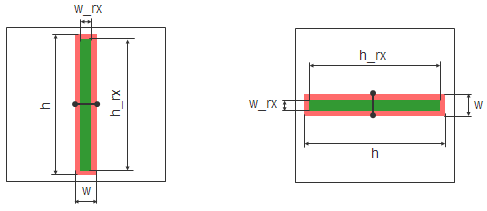

Test Pattern Command (topo only)
Specifies an active (RX) layer to add to a test pattern layout.
RX_FEATURE feature_name
[feature_parameter value]
...
Specifies the name of a topo feature template, as described in “Topo Model Test Patterns”.
Specifies parameters for the feature specified in the RX_FEATURE argument.
The RX_FEATURE keyword defines an instance of a topo test pattern structure in a test pattern file. The named test structure is placed on the RX (active) layer in the output file when a tepCompile command is run on the file.
The RX pattern uses the same block size as the associated implant pattern by default.
In the following example, an iso implant layer (red) is paired with an active rx_rect feature (green).
FEATURE iso
Orientation v|h
Widths w
Heights h
RX_FEATURE rx_rect
Widths w_rx
Heights h_rx
Orientation v|h